Recitation 2
Central tendency · Dispersion · Shape · Percentiles & box plots · Graphs for numerical data
How to use this page
Each question below is interactive. Click an option or type an answer, then press Check (or Enter). The page tells you right away whether the answer is correct. Show answer reveals the solution and the explanation, and Reset clears the question so you can try it again.
Numbers can be typed with a dot or a comma (3.2 or 3,2). Unless a question says otherwise, round to 2 decimals. Keep a calculator nearby!
Progress
Part A — The big picture
When we describe a numerical variable, we answer three questions:
| Question | Family of measures | Examples |
|---|---|---|
| Where is the centre of the data? | Central tendency (location) | mean, median, mode, geometric mean, harmonic mean |
| How spread out are the values? | Dispersion (variability) | range, variance, standard deviation, coefficient of variation, IQR |
| What does the distribution look like? | Shape | skewness, kurtosis |
Percentiles and quartiles describe the position of a value; the five-number summary and the box plot put centre, spread and shape into one picture.
Sort each measure into the right family.
- Arithmetic mean :: Central tendency
- Range :: Dispersion
- Median :: Central tendency
- Variance :: Dispersion
- Mode :: Central tendency
- Standard deviation :: Dispersion
- Geometric mean :: Central tendency
- Coefficient of variation :: Dispersion
- Harmonic mean :: Central tendency
- Interquartile range (IQR) :: Dispersion
- Skewness :: Shape
- Kurtosis :: Shape
| Measures of central tendency | Measures of dispersion |
|---|---|
| 1. Arithmetic mean | 1. Range |
| 2. Median | 2. Variance |
| 3. Mode | 3. Standard deviation |
| 4. Geometric mean | 4. Coefficient of variation |
| 5. Harmonic mean | 5. Interquartile range |
| 6. Percentiles / quartiles (used to build the IQR) |
Skewness (asymmetry) and kurtosis (tailedness) describe the shape of the distribution.
Match each formula with the name of the measure (sample versions).
- \(\displaystyle \bar{x}=\frac{1}{n}\sum_{i=1}^{n}x_i\) :: Arithmetic mean
- \(\displaystyle \left(\prod_{i=1}^{n}x_i\right)^{1/n}\) :: Geometric mean
- \(\displaystyle \frac{n}{\sum_{i=1}^{n} 1/x_i}\) :: Harmonic mean
- \(\displaystyle \frac{\sum (x_i-\bar{x})^2}{n-1}\) :: Sample variance
- \(\displaystyle \sqrt{s^2}\) :: Standard deviation
- \(\displaystyle \frac{s}{\bar{x}}\times 100\%\) :: Coefficient of variation
- \(Q_3 - Q_1\) :: Interquartile range
- \(\max - \min\) :: Range
Keep this as a formula sheet. Each formula appears again in the parts below, together with an example.
Students’ letter grades (AA, BA, BB, …, FF) are on an ordinal scale. Which measures of central tendency are appropriate? Select all that apply.
- Arithmetic mean
- Median
- Mode
- Geometric mean
- Standard deviation
For ordinal data we can count (mode) and rank (median), but the distance between AA and BA is not necessarily the same as between CC and DC, so averaging the categories is not justified. The standard deviation is not a measure of central tendency at all; it measures spread.
| Scale | Mode | Median | Mean |
|---|---|---|---|
| Nominal | ✓ | ✗ | ✗ |
| Ordinal | ✓ | ✓ | ✗ (debated) |
| Interval / Ratio | ✓ | ✓ | ✓ |
Part B — Measures of central tendency
- Arithmetic mean: the “balance point” of the data. It uses every observation, so it is sensitive to outliers. \[\bar{x}=\frac{1}{n}\sum_{i=1}^{n}x_i \quad\text{(sample)}\] \[\mu=\frac{1}{N}\sum_{i=1}^{N}x_i \quad\text{(population)}\]
- Median: the middle value of the ordered data. Half of the observations are below it and half are above it. It is robust to outliers.
- \(n\) odd: the \(\left(\frac{n+1}{2}\right)\)th ordered value
- \(n\) even: the average of the \(\left(\frac{n}{2}\right)\)th and \(\left(\frac{n}{2}+1\right)\)th ordered values
- Mode: the most frequent value. A data set can have no mode, one mode (unimodal) or several modes (bimodal, multimodal).
- Geometric mean (GM): for multiplicative quantities such as growth rates and returns. All values must be positive. \[GM=\sqrt[n]{x_1x_2\cdots x_n}\quad\Longleftrightarrow\quad \log GM=\frac{1}{n}\sum_{i=1}^{n}\log x_i\]
- Harmonic mean (HM): for rates (km/h, ₺/litre, pages/hour) measured over equal amounts of the “per” quantity (equal distances, equal money spent…). All values must be positive. \[HM=\frac{n}{\dfrac{1}{x_1}+\dfrac{1}{x_2}+\cdots+\dfrac{1}{x_n}}\]
- For positive data: \(\;HM \le GM \le AM\), with equality only when all values are the same.
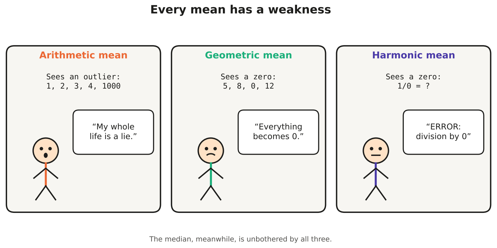
Warm-up with tiny numbers: for the data set \(\{2,\ 8\}\), find
arithmetic mean \(=\) , geometric mean \(=\) , harmonic mean \(=\)
- \(AM = (2+8)/2 = 5\)
- \(GM = \sqrt{2 \times 8} = \sqrt{16} = 4\)
- \(HM = \dfrac{2}{\frac12 + \frac18} = \dfrac{2}{0.625} = 3.2\)
So \(HM = 3.2 \;<\; GM = 4 \;<\; AM = 5\).
Physicians and dentists
The table gives the number of physicians and dentists per 100,000 population for 12 midwestern U.S. states in 2000.
| Rate / State | Ohio | Indiana | Illinois | Michigan | Wisconsin | Minnesota | Iowa | Missouri | North Dakota | South Dakota | Nebraska | Kansas |
|---|---|---|---|---|---|---|---|---|---|---|---|---|
| Physicians’ rate | 188 | 146 | 206 | 177 | 177 | 207 | 141 | 186 | 157 | 129 | 162 | 166 |
| Dentists’ rate | 56 | 48 | 61 | 64 | 70 | 70 | 60 | 55 | 55 | 54 | 71 | 52 |
For the calculations in the following sections, you can use the Calculator tab.
Calculate the mean, median and mode of each rate. Round the means to 2 decimals.
Physicians: mean \(=\) , median \(=\) , mode \(=\)
Dentists: mean \(=\) , median \(=\) , the two modes are and
Physicians. \(\sum x = 2042\), so \(\bar{x} = 2042/12 = 170.17\). Ordered: 129, 141, 146, 157, 162, 166, 177, 177, 186, 188, 206, 207. With \(n=12\) (even), the median is the average of the 6th and 7th values: \((166+177)/2 = 171.5\). The value 177 appears twice, so the mode is 177.
Dentists. \(\sum x = 716\), so \(\bar{x} = 716/12 = 59.67\). Ordered: 48, 52, 54, 55, 55, 56, 60, 61, 64, 70, 70, 71. The median is \((56+60)/2 = 58\). Both 55 and 70 appear twice, so the data are bimodal: the modes are 55 and 70.
Compare the mean and the median you found above. What do they suggest about the shape of each distribution?
- Physicians’ rate (mean 170.17, median 171.5) :: Slightly negatively (left) skewed | Approximately symmetric
- Dentists’ rate (mean 59.67, median 58) :: Slightly positively (right) skewed | Approximately symmetric
- Physicians: mean < median, so there is a slight pull to the left (the low values 129 and 141).
- Dentists: mean > median, so there is a slight pull to the right.
In both cases the difference is small (about 1.3 and 1.7 units), so “approximately symmetric” is also a fair answer. With only 12 observations we should not over-interpret small differences.
Now calculate the geometric mean and the harmonic mean of each rate (2 decimals).
Tip: for the GM, average the logarithms: \(GM = 10^{\frac{1}{n}\sum \log_{10} x_i}\).
Physicians: GM \(=\) , HM \(=\)
Dentists: GM \(=\) , HM \(=\)
| AM | GM | HM | |
|---|---|---|---|
| Physicians | 170.17 | 168.50 | 166.81 |
| Dentists | 59.67 | 59.22 | 58.78 |
Notice \(HM \le GM \le AM\) in both rows. Since these values are fairly close to one another, the three means are also close.
Physicians, HM: \(\sum 1/x_i = 0.071940\), so \(HM = 12/0.071940 = 166.81\).
Ayşe drives 240 km from Ankara to Eskişehir at 80 km/h and returns the same 240 km at 120 km/h.
What is her average speed for the whole round trip?
The tempting answer, \((80+120)/2 = 100\) km/h, is wrong: she spends more time driving at the slower speed.
- Time: \(240/80 = 3\) h, then \(240/120 = 2\) h, so 5 h in total.
- Average speed \(= \dfrac{\text{total distance}}{\text{total time}} = \dfrac{480}{5} = 96\) km/h.
This is exactly the harmonic mean: \(HM = \dfrac{2}{\frac{1}{80}+\frac{1}{120}} = 96\) km/h. Equal distances, different speeds → harmonic mean.
Every week Mert fills up for exactly ₺1,000, whatever the price. In week 1 fuel costs ₺40/litre, in week 2 it costs ₺50/litre.
What is the average price he paid per litre over the two weeks?
- Week 1: \(1000/40 = 25\) litres. Week 2: \(1000/50 = 20\) litres.
- Average price \(= \dfrac{\text{total money}}{\text{total litres}} = \dfrac{2000}{45} = 44.44\) ₺ per litre.
This is the harmonic mean of 40 and 50: \(\dfrac{2}{\frac{1}{40}+\frac{1}{50}} = 44.44\). The same amount of money is spent each time, so the “per” quantity (₺) is fixed and the HM is the right mean. (If he had bought the same number of litres each week, the arithmetic mean, ₺45, would be correct.)
An investment fund returned +20% in year 1, −10% in year 2 and +25% in year 3.
What is the average annual return (2 decimals, in %)?
Returns multiply, so convert them to growth factors: 1.20, 0.90, 1.25.
\[GM = \sqrt[3]{1.20 \times 0.90 \times 1.25} = \sqrt[3]{1.35} = 1.1052\]
so the average return is 10.52% per year. Check: ₺1,000 × 1.1052³ ≈ ₺1,350, the same as ₺1,000 × 1.20 × 0.90 × 1.25. The arithmetic mean of the returns, \((20-10+25)/3 = 11.67\%\), overstates the growth: ₺1,000 × 1.1167³ ≈ ₺1,392. Note that we could not use −10 directly in the GM, because the GM needs positive values. Growth factors solve the problem.
You are analyzing the speeds of three runners across three segments of a marathon, each having equal distance:
Runner 1: 12, 15, 11 km/h
Runner 2: 14, 13, 14 km/h
Runner 3: 10, 16, 12 km/h
Which type of mean is the most appropriate measure to calculate each runner’s true overall average speed?
- Arithmetic mean
- Geometric mean
- Harmonic mean
Because speeds are rates (km/h) measured over equal distances, the harmonic mean is required to obtain the true average speed:
| Runner | Arithmetic Mean | Harmonic Mean (True Speed) |
|---|---|---|
| Runner 1 | 12.67 km/h | 12.45 km/h |
| Runner 2 | 13.67 km/h | 13.65 km/h |
| Runner 3 | 12.67 km/h | 12.20 km/h |
Which mean would you use in each situation?
- Average of a student’s five quiz scores :: Arithmetic mean
- Average annual growth of a city’s population, which grew by 3%, 5% and 2% :: Geometric mean
- Average speed of a bus that travels equal distances at 50, 60 and 75 km/h :: Harmonic mean
- Average height of the students in this recitation :: Arithmetic mean
- Average hourly growth factor of a bacteria culture that doubles, then triples, then doubles :: Geometric mean
- Average price per kg of tomatoes when you spend ₺200 each time you go to the bazaar :: Harmonic mean
- Average typing speed (words per minute) over three texts of 500 words each :: Harmonic mean
- Average monthly electricity bill of a household over a year :: Arithmetic mean
- Same type of values that add up → arithmetic mean
- Values that multiply (growth, interest, ratios) → geometric mean
- Rates over a fixed amount of the “per” quantity (equal distances, equal money, equal words) → harmonic mean
Mean or median?
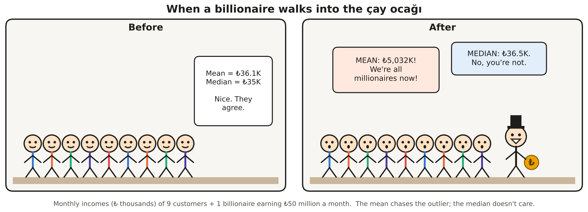
Nine customers in a çay ocağı have the following monthly incomes (in ₺ thousands):
\[28,\ 30,\ 32,\ 35,\ 35,\ 38,\ 40,\ 42,\ 45\]
Before: mean \(=\) , median \(=\)
A billionaire earning ₺50,000 thousand (₺50 million) per month walks in.
After: mean \(=\) , median \(=\) , mode \(=\)
- Before: \(\sum x = 325\), \(\bar{x} = 325/9 = 36.11\). With \(n=9\) the median is the 5th value, 35.
- After: \(\sum x = 50{,}325\), \(\bar{x} = 50{,}325/10 = 5{,}032.5\), about 139 times the old mean! With \(n=10\) the median is the average of the 5th and 6th values: \((35+38)/2 = 36.5\). The mode is still 35.
One extreme observation moved the mean from 36 to 5,032 but the median only from 35 to 36.5. The median is robust (resistant) to outliers; the mean is not.
You are analyzing the salaries of employees in a company. A few employees, such as the CEO and other top executives, have extremely high salaries. Which measure should you use to describe the “typical” salary?
- Mean
- Median
- Mode
- Geometric mean
- Harmonic mean
The extreme salaries pull the mean upwards (positive skew), so most employees earn less than the mean salary. The median is not affected by how extreme the top salaries are, so it represents a typical employee better. This is why official statistics usually report median income.
If the instructor adds 5 bonus points to every student’s exam score, both the mean and the median increase by exactly 5 points.
True. Adding a constant shifts every observation, so every measure of location (mean, median, mode, quartiles) shifts by the same constant. What about spread? The range, variance, standard deviation and IQR do not change, because the distances between the scores stay the same. More about this in Part C.
The geometric mean of the yearly returns −5%, +10% and +20% can be computed directly as \(\sqrt[3]{(-5)\times 10 \times 20}\).
False. The GM is defined only for positive values. The product here is negative, and the result has no meaning as an average return. Convert returns to growth factors first: 0.95, 1.10, 1.20. Then \(GM = \sqrt[3]{0.95 \times 1.10 \times 1.20} = 1.0784\), an average return of 7.84% per year.
Skewness: where are the mean, median and mode?
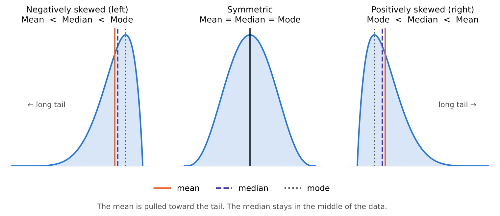
Indicate whether each distribution is positively skewed, negatively skewed, or approximately symmetric.
- Incomes of taxpayers: mean $48,000, median $43,000 :: Positively skewed
- GPAs of all students at a college: mean 3.01, median 3.20 :: Negatively skewed
- Number of “romantic affairs” reported anonymously by young adults: mean 2.6, median 1.9 :: Positively skewed
- Age at death in a developed country: mean 76, median 80 :: Negatively skewed
- Heights of adult women: mean 162 cm, median 162 cm :: Approximately symmetric
- House prices in İstanbul: mean ₺12 million, median ₺7 million :: Positively skewed
- Scores on a very easy 10-point quiz, where most students get 9 or 10 :: Negatively skewed
- Waiting time at a bank: most customers wait a few minutes, a few wait over an hour :: Positively skewed
Rule of thumb: the mean is pulled toward the long tail.
- Mean > median → long tail on the right → positively (right) skewed. Typical for incomes, prices, waiting times and counts, which cannot go below 0 but can be very large.
- Mean < median → long tail on the left → negatively (left) skewed. Typical for GPAs, easy-exam scores and age at death, which have a natural upper limit.
Part C — Measures of dispersion
Two classes can both have a mean of 60 on the midterm. In one class everyone scores between 55 and 65; in the other, scores range from 10 to 100. Central tendency alone is not enough.
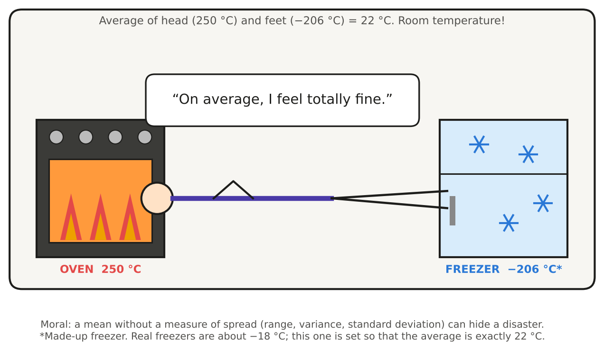
- Range \(= \max - \min\). Easy to compute, but it uses only the two most extreme values.
- Deviation of an observation: \(x_i-\bar{x}\). Deviations always sum to zero, so we square them.
- Variance: the average squared deviation. \[\sigma^2=\frac{1}{N}\sum_{i=1}^{N}(x_i-\mu)^2 \quad\text{(population)}\] \[s^2=\frac{1}{n-1}\sum_{i=1}^{n}(x_i-\bar{x})^2 \quad\text{(sample)}\] Shortcut formula: \[s^2=\frac{1}{n-1}\left[\sum x_i^2-\frac{\left(\sum x_i\right)^2}{n}\right]\]
- Standard deviation: \(s=\sqrt{s^2}\). It is in the same units as the data, unlike the variance (squared units).
- Coefficient of variation: \(CV=\dfrac{s}{\bar{x}}\times 100\%\). It is unit-free, so it compares the relative spread of variables with different units or very different means. It is meaningful only for ratio-scale data with a positive mean.
- Linear transformation \(y = a + bx\): \(\bar{y} = a + b\bar{x}\), \(s_y = |b|\,s_x\) and \(s_y^2 = b^2 s_x^2\). Adding a constant moves the data without changing the spread; multiplying rescales the spread.
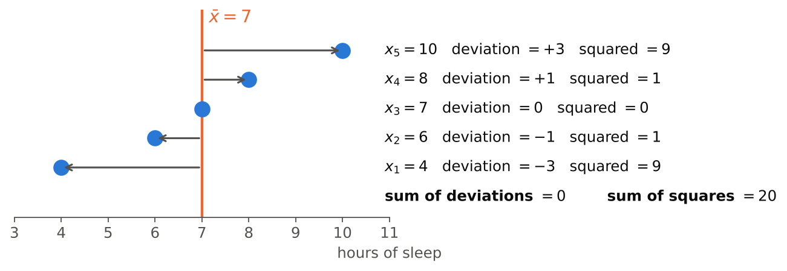
A sample of five students reported their hours of sleep last night: \(4,\ 6,\ 7,\ 8,\ 10\) (see the figure above).
Sum of deviations \(\sum (x_i-\bar{x}) =\)
Sum of squared deviations \(\sum (x_i-\bar{x})^2 =\)
Sample variance \(s^2 =\)
Sample standard deviation \(s =\) hours
Coefficient of variation \(CV =\) %
If these five students were the whole population, the variance would be \(\sigma^2 =\)
\(\bar{x} = 35/5 = 7\). Deviations: \(-3, -1, 0, +1, +3\), which sum to 0 (always!). Squared deviations: \(9 + 1 + 0 + 1 + 9 = 20\).
- \(s^2 = \dfrac{20}{n-1} = \dfrac{20}{4} = 5\) and \(s = \sqrt{5} = 2.24\) hours
- Shortcut check: \(\sum x^2 = 265\), so \(\dfrac{1}{4}\left[265 - \dfrac{35^2}{5}\right] = \dfrac{265-245}{4} = 5\) ✓
- \(CV = 2.24/7 \times 100\% = 31.94\%\)
- Population version: \(\sigma^2 = 20/N = 20/5 = 4\)
Why do we divide by \(n-1\) instead of \(n\) in the sample variance?
- Because one observation is always an outlier and should be removed.
- Because deviations are measured from \(\bar{x}\), which is computed from the same data, so they tend to be a little too small; dividing by \(n-1\) corrects this underestimation of \(\sigma^2\).
- Because it makes the variance smaller and therefore easier to interpret.
- It is only a convention: dividing by \(n\) or \(n-1\) always gives the same result.
The sample mean \(\bar{x}\) sits in the “middle” of this particular sample, so \(\sum (x_i-\bar{x})^2\) is on average smaller than \(\sum (x_i-\mu)^2\) would be. Dividing by \(n-1\) instead of \(n\) makes \(s^2\) a little larger, which makes it an unbiased estimator of \(\sigma^2\). Another way to see it: once \(\bar{x}\) is known, only \(n-1\) deviations are free to vary, because they must sum to 0. These are the degrees of freedom.
Law enforcement officers
The yearly numbers of law enforcement officers killed in the United States over 13 years:
\[164,\ 165,\ 157,\ 164,\ 152,\ 147,\ 148,\ 131,\ 147,\ 155,\ 172,\ 145,\ 160\]
Ordered data: 131, 145, 147, 147, 148, 152, 155, 157, 160, 164, 164, 165, 172
Mean \(\bar{x} =\)
Sample variance \(s^2 =\)
Standard deviation \(s =\)
Range \(=\)
\(Q_1 =\) , \(\;Q_3 =\) , \(\;IQR =\)
Coefficient of variation \(=\) %
- \(\sum x = 2007\), so \(\bar{x} = 2007/13 = 154.38\).
- \(\sum x^2 = 311{,}287\), so \[s^2 = \frac{1}{12}\left[311{,}287 - \frac{2007^2}{13}\right] = \frac{1437.08}{12} = 119.76\] and \(s = \sqrt{119.76} = 10.94\).
- Range \(= 172 - 131 = 41\).
- Quartiles (lecture rule): for \(Q_1\), \(np = 13(0.25) = 3.25\), so we need at least 3.25 values \(\le Q_1\) and at least 9.75 values \(\ge Q_1\). That is the 4th ordered value, \(Q_1 = 147\). For \(Q_3\), \(np = 9.75\) gives the 10th value, \(Q_3 = 164\). So \(IQR = 164 - 147 = 17\).
- \(CV = 10.94/154.38 \times 100\% = 7.09\%\). The yearly numbers vary only about 7% around their mean, which is a fairly stable series.
You are analyzing the distribution of income among individuals in two different countries. Which measure should you use to assess the variability of income that excludes the influence of extreme outliers?
- Range
- Interquartile range (IQR)
- Standard deviation
- Coefficient of variation
The IQR \(= Q_3 - Q_1\) uses only the middle 50% of the data, so a few billionaires do not change it. The range depends only on the extremes, and the standard deviation and CV square the deviations, which makes outliers even more influential.
During a heatwave, City A records daily temperatures in °C and City B records them in °F. Which approach gives a fair comparison of the day-to-day variability in the two cities?
- Compare the two ranges as they are.
- Compare the two IQRs as they are.
- Compare the two standard deviations as they are.
- Compare the two coefficients of variation.
- Convert both series to the same scale (e.g. °C), then compare their standard deviations.
The CV looks like the right tool because it is unit-free, but it only works for ratio-scale data. Temperature in °C or °F is on an interval scale with no true zero, so the CV changes when the scale changes:
| Mean | SD | CV | |
|---|---|---|---|
| Same days in °C | 30 | 4 | 13.3% |
| Same days in °F | 86 | 7.2 | 8.4% |
Same weather, different CV! Converting both cities to the same unit and then comparing standard deviations (or IQRs) is the correct approach. Note: last year’s answer key gave “coefficient of variation” for this question. Use the CV to compare relative spread only for ratio-scale variables with a true zero, such as weights, prices and incomes.
In a hospital, newborn weights have mean 3.3 kg and standard deviation 0.5 kg. Adult men have mean weight 78 kg and standard deviation 11 kg.
CV of newborns \(=\) %, CV of adult men \(=\) %.
Relative to their mean, the weights of vary more.
- Newborns: \(CV = 0.5/3.3 \times 100\% = 15.15\%\)
- Adult men: \(CV = 11/78 \times 100\% = 14.10\%\)
The adults’ SD (11 kg) is 22 times larger than the newborns’ SD (0.5 kg), but their mean is also much larger. Relative to the mean, newborn weights are slightly more variable. Comparing SDs directly would be misleading here.
September daily high temperatures in Ankara have mean 26 °C and standard deviation 3 °C. Convert to Fahrenheit using \(F = 32 + 1.8\,C\).
Mean \(=\) °F, standard deviation \(=\) °F, variance \(=\) °F²
For \(y = a + bx\) with \(a = 32\) and \(b = 1.8\):
- \(\bar{y} = 32 + 1.8(26) = 78.8\) °F, because the mean moves and stretches.
- \(s_y = |1.8| \times 3 = 5.4\) °F, because the “+32” shift does not affect the spread.
- \(s_y^2 = 1.8^2 \times 3^2 = 3.24 \times 9 = 29.16\) °F².
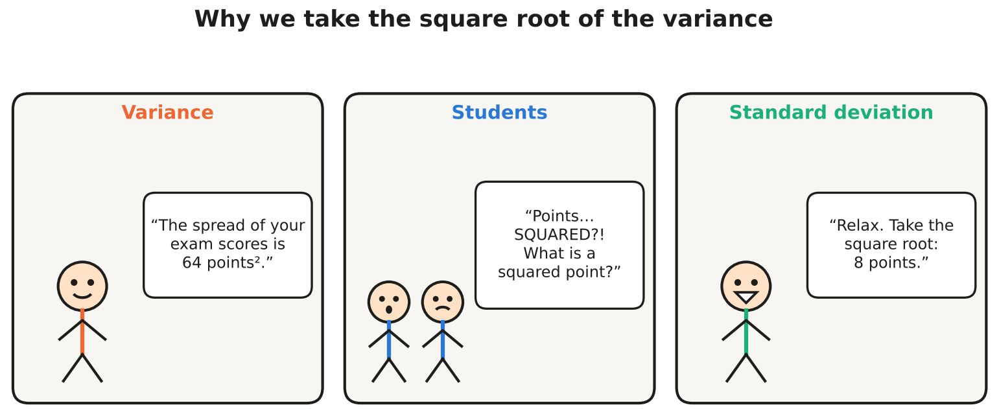
Which statements about the variance and the standard deviation are true? Select all that apply.
- If all observations are equal, the standard deviation is 0.
- The variance can be negative when most observations are below the mean.
- The standard deviation is measured in the same units as the data.
- Multiplying every observation by 3 multiplies the variance by 9.
- Adding 10 to every observation increases the standard deviation by 10.
- a. True. All deviations are 0, so there is no spread.
- b. False. The variance is an average of squares, so it is always \(\ge 0\).
- c. True. That is why we usually report \(s\) rather than \(s^2\).
- d. True. \(s_y^2 = b^2 s_x^2 = 9 s_x^2\), while the standard deviation is multiplied by 3.
- e. False. Shifting all values changes nothing about how far they are from one another, so the SD is unchanged.
Part D — Shape: the empirical rule and kurtosis
- Skewness measures asymmetry: which side has the longer tail (see Part B).
- Kurtosis measures tailedness: how heavy the tails are, that is, how prone the distribution is to producing extreme values. It is not just “how pointy the peak is”.
- Normal distribution: kurtosis \(= 3\), so excess kurtosis \(=\) kurtosis \(- 3 = 0\) (mesokurtic)
- Excess kurtosis \(> 0\): leptokurtic, heavy tails, more outliers
- Excess kurtosis \(< 0\): platykurtic, light tails, fewer outliers
- Empirical rule: for mound-shaped (bell-shaped) data, about 68% of the observations lie within \(\bar{x} \pm s\), about 95% within \(\bar{x} \pm 2s\), and about 99.7% within \(\bar{x} \pm 3s\).
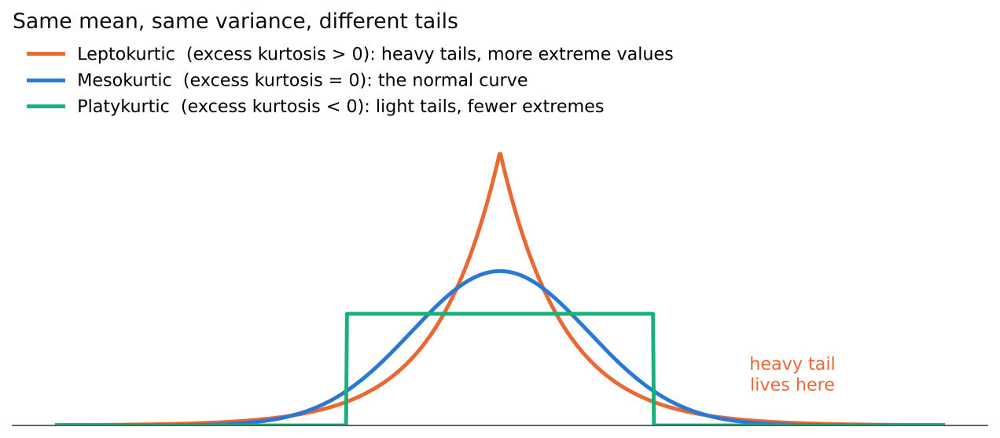
Classify each distribution. Read carefully: some values are kurtosis and some are excess kurtosis.
- Excess kurtosis \(= -1.2\) :: Platykurtic
- Excess kurtosis \(= 0.02\) :: Mesokurtic
- Excess kurtosis \(= 3\) :: Leptokurtic
- Kurtosis \(= 3\) :: Mesokurtic
- Kurtosis \(= 1.8\) :: Platykurtic
- Kurtosis \(= 9\) :: Leptokurtic
- Daily stock returns, which have many more extreme crashes and jumps than a normal distribution :: Leptokurtic
Always check which one is reported: excess kurtosis \(=\) kurtosis \(- 3\).
- Kurtosis 3 means excess 0: mesokurtic (normal-like tails).
- Kurtosis 1.8 means excess −1.2: platykurtic. This is the uniform distribution!
- Kurtosis 9 means excess 6: leptokurtic.
Financial returns are the classic leptokurtic example: “once-in-a-century” crashes happen far more often than the normal model predicts.
Kurtosis tells us only how tall and sharp the peak of a distribution is.
False. Kurtosis is mainly about the tails, that is, about outliers and extreme values. Two distributions can have similar-looking peaks but very different tails, and the tails drive the kurtosis.
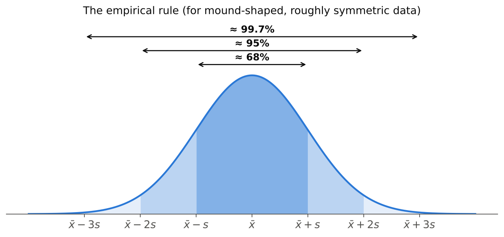
Scores on a large STAT 112 midterm are mound-shaped with mean 62 and standard deviation 9. Use the empirical rule.
About 68% of the scores lie between and .
About 95% of the scores lie between and .
About % of the scores lie between 35 and 89.
Approximately % of the students scored above 80.
Approximately % of the students scored between 62 and 71.
- \(62 \pm 9 = [53,\ 71]\) contains about 68%
- \(62 \pm 2(9) = [44,\ 80]\) contains about 95%
- \(62 \pm 3(9) = [35,\ 89]\) contains about 99.7%
- Above 80: 5% is outside \([44, 80]\). By symmetry half of that is in the upper tail, so about 2.5%.
- Between 62 and 71: half of the central 68%, so about 34%.
Part E — Percentiles, quartiles and box plots
- The \(p\)th percentile (\(0<p<1\)): a value such that at least \(np\) observations are \(\le\) it and at least \(n(1-p)\) observations are \(\ge\) it.
- Quartiles: \(Q_1\) = 25th percentile, \(Q_2\) = median = 50th percentile, \(Q_3\) = 75th percentile.
- Five-number summary: minimum, \(Q_1\), median, \(Q_3\), maximum.
- Interquartile range: \(IQR = Q_3 - Q_1\), the spread of the middle 50%.
- Fences for potential outliers: \[\text{lower fence} = Q_1 - 1.5\,IQR\] \[\text{upper fence} = Q_3 + 1.5\,IQR\] Observations outside the fences are flagged as potential outliers. The whiskers stop at the most extreme observations inside the fences.
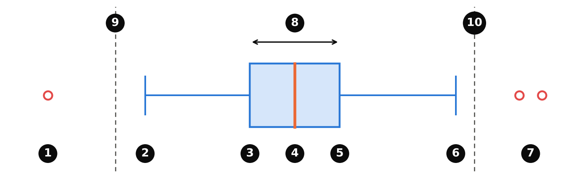
Match each numbered label in the box plot with what it shows.
- Label 1 :: A potential outlier below the lower fence
- Label 2 :: End of the lower whisker: the smallest observation inside the fences
- Label 3 :: First quartile, Q1 (25th percentile)
- Label 4 :: Median, Q2 (50th percentile)
- Label 5 :: Third quartile, Q3 (75th percentile)
- Label 6 :: End of the upper whisker: the largest observation inside the fences
- Label 7 :: Potential outliers above the upper fence
- Label 8 :: Interquartile range, the width of the box: Q3 − Q1
- Label 9 :: Lower fence: Q1 − 1.5 × IQR (not drawn on most box plots)
- Label 10 :: Upper fence: Q3 + 1.5 × IQR (not drawn on most box plots)
- The box holds the middle 50% of the data, and the line inside is the median.
- The whiskers do not necessarily reach the minimum and maximum. They stop at the last observation inside the fences, and anything beyond is plotted as a separate point.
- When there are no outliers, the whisker ends are the minimum and the maximum.
The one-way commute times (minutes) of 15 METU students, already ordered:
\[12,\ 15,\ 18,\ 20,\ 22,\ 22,\ 25,\ 27,\ 30,\ 31,\ 35,\ 38,\ 40,\ 45,\ 95\]
Median \(=\) , \(\;Q_1 =\) , \(\;Q_3 =\) , \(\;IQR =\)
Lower fence \(=\) , upper fence \(=\)
The potential outlier is minutes, so the upper whisker ends at .
The 90th percentile is minutes.
The mean is , which is larger than the median, so the distribution is .
- \(n = 15\), so the median is the \(\frac{15+1}{2} = 8\)th value: 27.
- \(Q_1\): \(np = 15(0.25) = 3.75\), so we need ≥ 3.75 values below it and ≥ 11.25 values above it. That is the 4th value, 20.
- \(Q_3\): \(np = 11.25\) gives the 12th value, 38.
- \(IQR = 38 - 20 = 18\) and \(1.5 \times IQR = 27\).
- Fences: \(20 - 27 = -7\) and \(38 + 27 = 65\). Only 95 is outside, so it is a potential outlier. The upper whisker stops at 45, the largest value inside the fences.
- \(P_{90}\): \(np = 13.5\), so we need ≥ 13.5 values below it and ≥ 1.5 above it. That is the 14th value, 45.
- \(\bar{x} = 475/15 = 31.67 > 27\): the student with a 95-minute commute pulls the mean to the right, so the distribution is positively skewed.
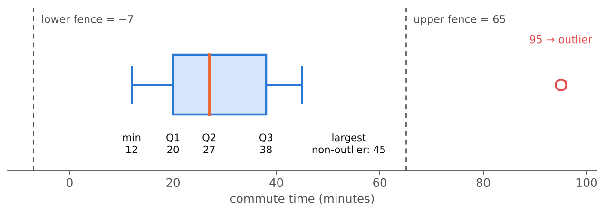
Your university entrance exam result places you at the 85th percentile. What does this mean?
- You answered 85% of the questions correctly.
- Your score is 85 out of 100.
- About 85% of the test takers scored at or below your score, and about 15% scored at or above it.
- Only 85 people scored higher than you.
A percentile describes your position relative to the other test takers, not the percentage of questions you answered correctly. At the 85th percentile, you did as well as or better than about 85% of the group.
Reading box plots
A market researcher studies the annual revenue of the stores of a retail chain.
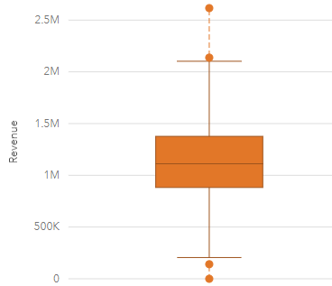
Read the box plot (in millions of ₺; approximate values are fine).
Median ≈ M, \(\;Q_1\) ≈ M, \(\;Q_3\) ≈ M, \(\;IQR\) ≈ M
Number of stores flagged as potential outliers:
- The box runs from about 0.88 M (\(Q_1\)) to about 1.38 M (\(Q_3\)), so \(IQR \approx 0.5\) M. The median line is at about 1.1 M.
- Fences: \(0.88 - 1.5(0.5) \approx 0.13\) M and \(1.38 + 1.5(0.5) \approx 2.13\) M.
- Four stores lie outside: two low (about 0.13 M and 0) and two high (about 2.15 M and 2.6 M).
- The median is close to the centre of the box and the whiskers have similar lengths, so the distribution is roughly symmetric, apart from a few unusual stores.
- A store with zero revenue deserves a closer look. Was it newly opened, closed for renovation, or is it a data-entry error?
Write a 2–3 sentence interpretation of the single revenue box plot above, as you would write it in a report for the store manager.
Model answer: The median annual revenue is about ₺1.1 million, so half of the stores earn less than this and half earn more. The middle 50% of stores earn between roughly ₺0.9 and ₺1.4 million (IQR ≈ ₺0.5 million), and the distribution is roughly symmetric. Four stores are potential outliers: two earn unusually little (one about ₺0) and two earn unusually much (up to about ₺2.6 million). These four should be investigated.
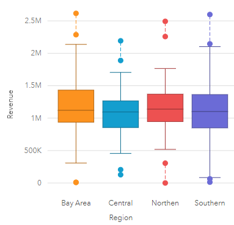
The same stores, now split by region. Which statements are supported by the plot? Select all that apply.
- The median revenue is roughly the same (about 1.1 M) in all four regions.
- Every region has at least one store flagged as a potential outlier.
- The Southern region’s median revenue is clearly the highest.
- Between the whisker ends, the Southern region shows the widest spread.
- The Central region has a store with revenue above 2.5 M.
- The Bay Area has potential outliers on both the low and the high side.
- a. True. All the median lines are close to 1.1 M.
- b. True. Each region has points beyond its whiskers.
- c. False. The Northern median is, if anything, slightly higher, and the differences are tiny.
- d. True. The Southern whiskers run from about 0.1 M to 2.1 M.
- e. False. Central’s highest point is about 2.2 M.
- f. True. It has a store near 0 and two above 2.2 M.
Overall: region does not seem to make much difference to typical revenue. The boxes overlap almost completely.
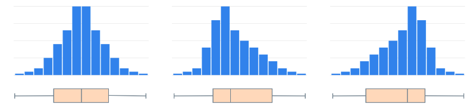
Describe the distribution in each panel.
- Left panel :: Symmetric
- Middle panel :: Positively skewed
- Right panel :: Negatively skewed
- Left: the median is in the middle of the box and the whiskers are equal: symmetric.
- Middle: the long tail is on the right; the median is closer to \(Q_1\) and the right whisker is longer: positively (right) skewed.
- Right: the mirror image, with a long tail on the left; the median is closer to \(Q_3\): negatively (left) skewed.
Box plot shortcut: the longer whisker and the larger half of the box point toward the tail.
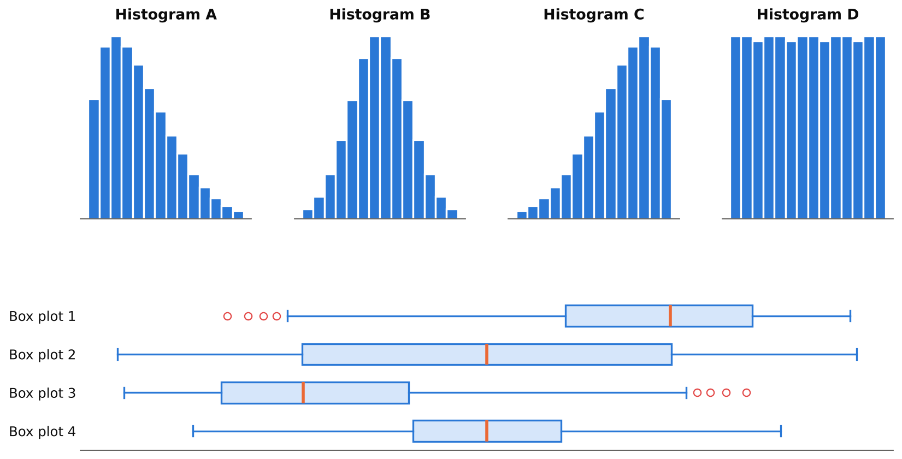
Each histogram shows the same data as one of the box plots. Which box plot belongs to each histogram?
- Histogram A :: Box plot 3
- Histogram B :: Box plot 4
- Histogram C :: Box plot 1
- Histogram D :: Box plot 2
- A (right-skewed) → Box plot 3: the median sits near the left of the box, there is a long right whisker, and the high values are flagged as outliers.
- B (symmetric, bell-shaped) → Box plot 4: a narrow box in the centre with balanced whiskers. Most data are near the middle, so the IQR is small.
- C (left-skewed) → Box plot 1: the mirror image of box plot 3.
- D (flat, uniform) → Box plot 2: a very wide box, because the values are spread evenly, and a median exactly in the middle.
Box plots 2 and 4 are both symmetric. The width of the box (the IQR) tells them apart.
Put the steps for constructing a box plot by hand in the correct order.
- Sort the data from smallest to largest
- Find the median, \(Q_1\) and \(Q_3\)
- Compute \(IQR = Q_3 - Q_1\)
- Compute the fences \(Q_1 - 1.5\,IQR\) and \(Q_3 + 1.5\,IQR\)
- Flag the observations outside the fences as potential outliers
- Draw the box from \(Q_1\) to \(Q_3\) with a line at the median
- Draw the whiskers to the most extreme observations inside the fences and plot the outliers as points
You need the quartiles before the IQR, the IQR before the fences, and the fences before you know where the whiskers stop.